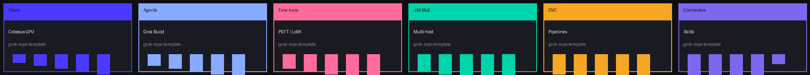

Configure your template
Pick domains, infrastructure, and Grok ecosystem paths — get an auto-config first prompt, JSON/YAML manifest, and GitHub search keywords for the fastest pipe.
1 · Domains
2 · Infrastructure
3 · Connectors
4 · Export
Select project type / domain examples to scaffold from the template.
Infrastructure: Colossus cluster, DVC, Docker, CI/CD.
Grok connectors
Ecosystem path routing
Grokipedia, X.com, X.ai, Imagine, SpaceX/Terrafab, SuperHeavyGrok/Colossus server paths.
Primary deliverable: copy the first-prompt block into Grok GitHub connector (or future Cursor / terminal agent hooks).
Demo reel — static charts in README; interactive ECharts below.



Year activity heatmaps — pipeline runs, agent activity, contributions. README uses static graphs; this page is the live ECharts experience.